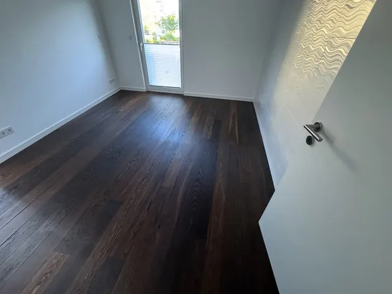
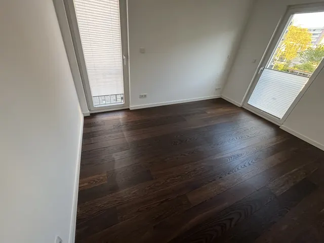

Komplettsanierung
Gewerkeübergreifende Sanierung von Häusern und Wohnungen: ein Ansprechpartner, abgestimmte Gewerkefolge, dokumentierter Baufortschritt.
Besichtigung & AngebotMehr erfahren
Leistungsbereich
Eine Sanierung berührt fast immer mehrere Gewerke: Elektro, Trockenbau, Fliesen, Boden, Malerarbeiten. Wir koordinieren diese Arbeiten in einer sinnvollen Reihenfolge, damit Termine ineinandergreifen und Sie einen festen Ansprechpartner haben.
Jedes Projekt beginnt mit einer Besichtigung und einem Aufmaß. Danach erhalten Sie eine nachvollziehbare Kalkulation und ein schriftliches Angebot. Gewerke, die eine besondere handwerksrechtliche Berechtigung erfordern, führen wir nur im Rahmen unserer Eintragungen oder mit qualifizierten Partnerbetrieben aus – das legen wir im Angebot offen.
Gewerkeübergreifende Sanierung von Häusern und Wohnungen: ein Ansprechpartner, abgestimmte Gewerkefolge, dokumentierter Baufortschritt.
Besichtigung & AngebotMehr erfahren
Sanierung einzelner Wohnungen: Elektrik, Wände, Böden, Bad und Anstrich – planbar und mit Blick auf die schnelle Wiedervermietung.
Besichtigung & AngebotMehr erfahren
Vom Rückbau bis zur Montage: Badsanierung mit Elektro, Trockenbau, Abdichtung und Fliesen – koordiniert aus einer Hand.
Besichtigung & AngebotMehr erfahren
Wand- und Bodenfliesen für Bad, Küche und Flur – mit Untergrundvorbereitung, Abdichtung und sauberer Verfugung.
Besichtigung & AngebotMehr erfahren
Streichen, tapezieren, spachteln: Wände und Decken in Wohnungen, Treppenhäusern und Gewerberäumen – sauber abgedeckt und termingerecht.
Besichtigung & AngebotMehr erfahren
Ständerwände, abgehängte Decken, Vorsatzschalen, Dachgeschossausbau sowie Decken- und Wandgestaltung – inklusive Elektro aus einer Hand.
Besichtigung & AngebotMehr erfahren
Alles für die schnelle Wiedervermietung: Malerarbeiten, Böden, Elektroprüfung, Kleinreparaturen, Entrümpelung und Endreinigung in einem Ablauf.
Besichtigung & AngebotMehr erfahren
Vinyl, Designboden, Laminat, PVC, Teppich, Parkett – inklusive Entfernung alter Beläge, Untergrundvorbereitung, Ausgleich und Sockelleisten.
Besichtigung & AngebotMehr erfahren
Klickvinyl oder vollflächig verklebter Designboden – mit ebenem Untergrund, sauberen Anschlüssen und passenden Sockelleisten.
Besichtigung & AngebotMehr erfahren
Laminat mit passender Trittschalldämmung, sauberen Dehnungsfugen, gekürzten Türzargen und Sockelleisten.
Besichtigung & AngebotMehr erfahren
Teppichboden für Wohn- und Büroräume, PVC für Mietwohnungen und Nebenräume – vollflächig verklebt oder verspannt.
Besichtigung & AngebotMehr erfahren
Fertigparkett schwimmend oder verklebt – ausgeführt im Rahmen der handwerksrechtlichen Berechtigung bzw. über eingetragene Partnerbetriebe.
Besichtigung & AngebotMehr erfahren
Eigene Fotos von unseren Baustellen – ohne Stockbilder.




Prozess „Handwerk und Sanierung“
Sie beschreiben Ihr Vorhaben und senden gern Fotos oder Pläne mit.
Wir sehen uns die Situation vor Ort an und nehmen Maße und Bestand auf.
Sie erhalten ein schriftliches, nachvollziehbares Angebot mit Leistungspositionen.
Nach Ihrer Freigabe planen wir Termine und Gewerkefolge.
Material wird bestellt und auf den Bauablauf abgestimmt.
Ausführung mit fotografischer Baustellendokumentation.
Gemeinsame Abnahme mit Protokoll.
Abschlags- und Schlussrechnung entsprechend Angebot und Baufortschritt.
Das hängt stark vom Umfang ab. Einen realistischen Bauzeitenplan erhalten Sie mit dem Angebot, nachdem wir das Objekt besichtigt haben.
Ja, darauf ist unser Ablauf ausgelegt. Die realistische Dauer hängt vom Umfang ab und steht im Angebot.
Abhängig von Größe und Umfang meist mehrere Wochen inklusive Trocknungszeiten. Den Zeitplan erhalten Sie mit dem Angebot.
In manchen Fällen ja, wenn der alte Belag fest und tragfähig ist und die Aufbauhöhe passt. Das beurteilen wir vor Ort.
Ja. Wir planen die Arbeiten so, dass das Treppenhaus nutzbar bleibt, und informieren die Bewohner vorab.
Eine einfache Wand ist oft in wenigen Tagen inklusive Spachtelarbeiten fertig. Danach kann gestrichen oder tapeziert werden.
Beschreiben Sie Ihr Vorhaben – wir melden uns mit einem Termin- oder Angebotsvorschlag.